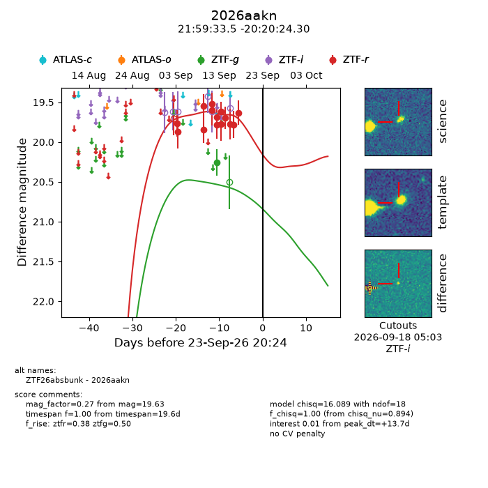
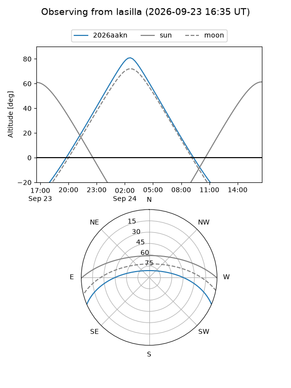
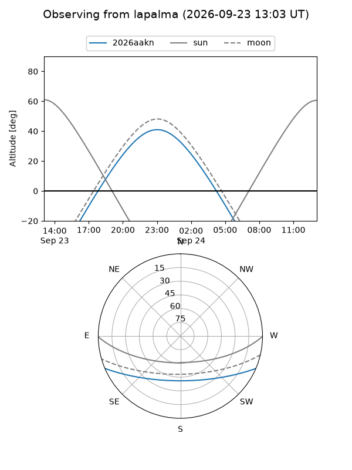
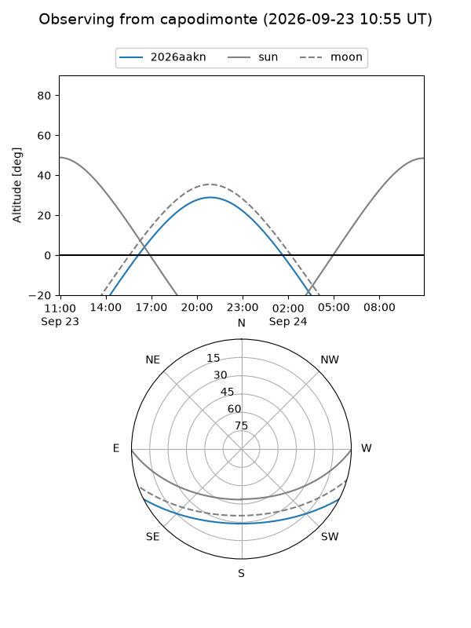
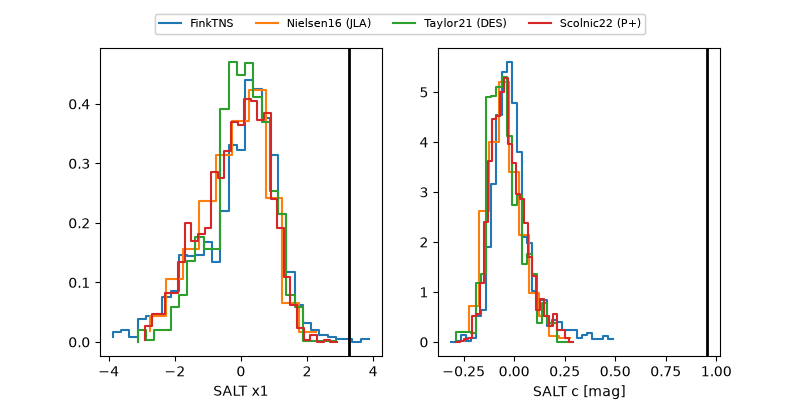

2026aakn
Target 2026aakn at 2026-09-24 08:21
Aliases and brokers:
FINK-ZTF: ztf.fink-portal.org/ZTF26absbunk
Lasair-ZTF: lasair-ztf.lsst.ac.uk/objects/ZTF26absbunk
ALeRCE-ZTF: alerce.online/object/ZTF26absbunk
YSE-PZ: ziggy.ucolick.org/yse/transient_detail/2026aakn
TNS name: wis-tns.org/object/2026aakn
Direct TNS query: direct search
alt names
ZTF26absbunk (ztf,fink_ztf)
2026aakn (tns,yse)
Coordinates:
equatorial (ra, dec) = 329.8897,-20.34008
equatorial (HMS+DMS) = 21:59:33.52,-20:20:24.30
galactic (l, b) = (33.2450,-50.27370)
Flags:
TNS type: nan
peak dt: +14.2
Photometry:
last ztfg=20.26, ztfr=19.63
1 ztfg, 14 ztfr detections
Lightcurve

Visibility



Additional plots
